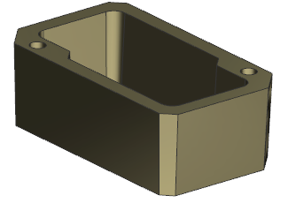
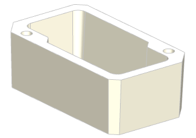
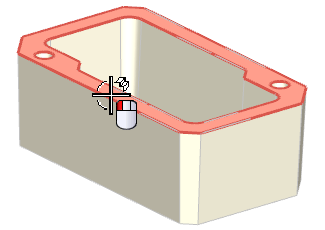
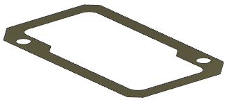
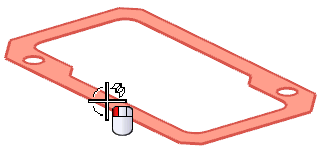
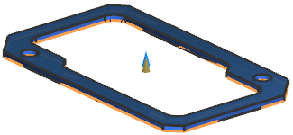

创建箱体密封垫
-
点击标准工具条上的打开
 。
。 -
在打开对话框中，点击选项。
-
在装配加载选项对话框中，设置如下参数：
部件版本组：
-
加载 = 从文件夹
范围组：
-
加载 = 所有组件
-
使用部分加载 =

-
使用轻量级表示 =
-
加载部件间数据 =
-
-
点击确定。
-
打开 wav3_box_assembly。
在装配导航器中，您可以看到装配文件中包含三个组件，箱体是其中唯一包含实体的部件，密封垫以及顶盖部件都是空文件，您将使用箱体的顶面来设计密封垫。

-
将 wav3_box_seal 设为工作部件。

-
点击装配工具条上的 WAVE 几何体链接器 。
-
在 WAVE 几何体链接器对话框中，设置如下参数：
-
类型 = 面
设置组：
-
关联 =

-
隐藏原先的 =
-
固定于当前时间戳记 =
-
使用父部件的显示属性 =
-
设为与位置无关 =
-
复制螺纹 =
-
-
选择如图所示箱体的顶面。

将创建链接的面。

-
选择插入→偏置/缩放→加厚 。
-
选择如图所示链接的面。

-
在加厚对话框中，设置如下参数：
厚度组：
-
偏置 1 = 2.5
-
Offset 2 = 0

-
-
点击确定。